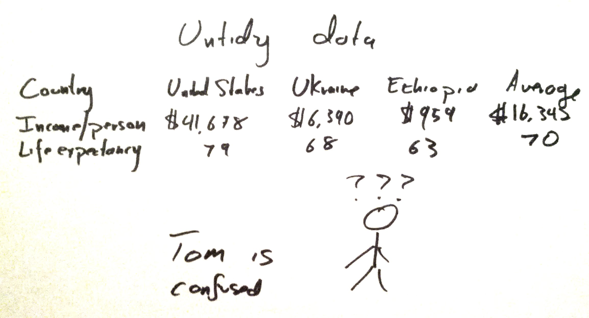

“Data” means “table”
I don’t really like to distinguish between data and anything else because everything is data to me. But I sort of do make a distinction, and here it is: Data are things in data tables.
Once we express the world in data tables, we can study it with a wide body of analytical tools that expect data to be in tables. When we work with tables so much, we come up with lots of fancy words to describe all of the different parts of a table.
Rows and columns
Here’s a data table about the wealth and health of nations.
| Country | Life expectancy (years) | Income Per Person |
|---|---|---|
| United States | 79 | $41,678 |
| Ukraine | 68 | $6,390 |
| Ethiopia | 63 | $959 |
It has a grid with a value in each of the rectangular boxes. Being this sort of grid, it has columns and rows. These columns and rows mean special things.
What we’re calling “income per person” is technically gross-domestic product per capita, adjusted for purchasing power parity and inflation. But don’t worry about that if it sounds like Greek.
Rows
The very first line in that table says “Country”, “Life Expectancy” and “Income Per Person”. This line is called the “header”, and we’ll get to that later.
The rest of the lines are all rows. A data table represents a collection of things, and each individual thing is represented as a row. For example, the table above is about a collection of countries, so each row is a country. I’ve copied it down here again, this time highlighting one of its three rows.
| Country | Life expectancy (years) | Income Per Person |
|---|---|---|
| United States | 79 | $41,678 |
| Ukraine | 68 | $6,390 |
| Ethiopia | 63 | $959 |
It is quite important to know that each row is a country, so we have a name for this relationship; we say that country is the the statistical unit in this data table.
Synonyms: Rows are also called records, observations, trials and probably a bunch of other things.
Columns
In this data table, we have recorded a bunch of information about each the wealth and health of nations. More precisely, we have recorded the same sorts of information about each country during the year 2012. The first box in each row contains the name of that country, and the second box contains the life expectancy for that country, and the third contains the income per person.
Thus, all of the values in a given column are about the same sort of thing. For example, the second column contains all of the life expectencies.
| Country | Life expectancy (years) | Income Per Person |
|---|---|---|
| United States | 79 | $41,678 |
| Ukraine | 68 | $6,390 |
| Ethiopia | 63 | $959 |
Synonyms: Columns are also called variables and features. These words sound very fancy, but they’re not; when a data scientist says “variable” or “feature”, she’s just using a fancy word for “column”.
Header
We usually indicate the names of the columns in the header, which is highlighted below. This is how we know what each column means.
| Country | Life expectancy (years) | Income Per Person |
|---|---|---|
| United States | 79 | $41,678 |
| Ukraine | 68 | $6,390 |
| Ethiopia | 63 | $959 |
Tidy data
I said above that “row” is a synonym for “record”, “observation” and “trial and that “column” is a synonym for “variable” and “feature”. This isn’t entirely true. In my mind, these truly are synonyms, but I’m sometimes given a data table that doesn’t look like this.
You could make a data table where rows don’t correspond to records and where columns don’t correspond to variables. For example, you could make a table where and columns are records and rows are variables. Or you could make a table that includes a few rows that are statistics about the other rows. I get confused when they I have tables like this.

There’s actually a name for this sort of data table; it’s called untidy data, and the first thing that I do when analyzing such a data table is converting it into the tidy format where each row is an observation/trial/record and each column is a variable.
Review
- Data scientists like to put things in tables.
- In the table, a row is a record/observation/trial, which corresponds to the statistical unit of the dataset.
- In the table, a column is a variable/feature.
- This layout of a table is called “tidy data”, and data scientists like their data to be tidy.
Ask questions!
Data science has lots of words and concepts that often sound fancier than they really are. What should I tell you about next?